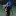
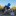
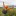
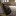

阿前的登山包
包包的體積與重量很大程度影響整體背負的重量。
索引
迪卡農登山包 #雙鋁條支架 重量約1.6kg 50L
只用了瑪陵溫泉與爬一次嘉明湖就送人了，從這開始就知道背包本身的輕量化就應該做好。

Hanchor PUMICE極輕量登山背包 + M2緩衝包覆腰帶 #無支架 重量422g + 155g 37+10L
無支架背包極大的節省重量，包體較小迫使自身無法攜帶額外的小廢物，要極盡地將所有內容物一起輕量與縮小。加購M2緩衝包覆腰帶多了左右腰包的空間可以放置。
但一些人很不習慣無支架系統，不能勉強，也是有一些輕量包有支架還是很輕的。
後期也是在裡面放剪裁過的泡棉睡墊當作支撐，並且拿來墊在充氣睡墊下避免穿刺與增加R值。
  